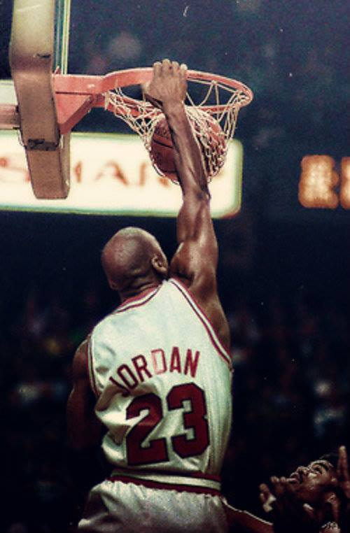
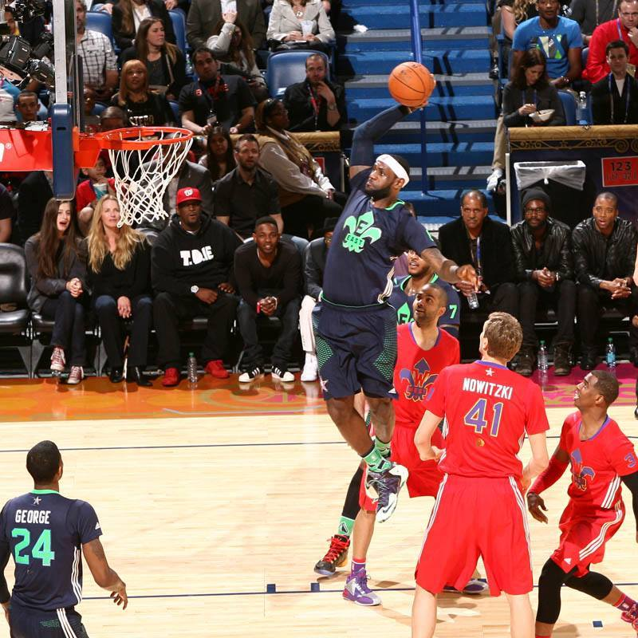

Basketball
This is Basketball
¿Facil?
¿Quien dijo que seria facil?
En el basket tienes que entrenar,mejorar,esforzarte.
Tienes que dejar tu vida,no,tu alma! en la duela.
En cada entra a canasta,cada pase,cada dribleo,cada salto,
cada canasta...
Si no juegas con amor
¿Entonces para que juegas?
¿Quieres algo facil?
vete a jugar Futbol
¿Quieres un reto?
¡¡Juega Basketball!!
E-mail
Facebook

Michael Jeffrey Jordan (Brooklyn, 17 de febrero de 1963)
, conocido como Michael Jordan y apodado «Air» («Aire»), «His Royal Airness»
(«Su Aireza Real»), «Air Jordan» y «The King» («El Rey»), es un exjugador
profesional de baloncesto estadounidense. En la actualidad, es el propietario
de los Charlotte Bobcats, franquicia de la NBA.2 Está considerado por la
mayoría de aficionados y especialistas como el mejor jugador de baloncesto de
todos los tiempos.3 Se retiró definitivamente en 2003, tras haberlo hecho en
dos ocasiones anteriores, en 1993 y 1999.
Ganó seis anillos con Chicago Bulls, promediando 30,1 puntos por partido en
toda su carrera, el mayor promedio en la historia de la liga. También ganó
10 títulos de máximo anotador, 5 MVP de la temporada, 6 MVP de las Finales
, nombrado en el mejor quinteto de la NBA en diez ocasiones, en el defensivo
nueve veces, líder en robos de balón durante tres años y un premio al mejor
defensor de la temporada.
Desde 1983, ha aparecido en la portada de la prestigiosa revista deportiva
Sports Illustrated en 50 ocasiones, todo un récord, además de ser nombrado
"Deportista del Año" en 1991. Fue nombrado "mejor atleta del siglo XX" por
ESPN y segundo tras Babe Ruth por Associated Press.4

LeBron Raymone James (n. Akron, Ohio, 30 de diciembre de
1984) es un jugador profesional de baloncesto estadounidense que pertenece a la
plantilla de Miami Heat.1 Mide 2,03 metros de estatura, y juega en la
posición de alero. Cuando James se proclamó 3 veces "Mr. Basketball" en Ohio
durante el instituto, y apenas cursaba su temporada sophomore en St. Vincent
- St. Mary, ya era considerado por los medios de comunicación como la futura
gran estrella de la NBA. Firmó un contrato de 90 millones de dólares con
Nike antes de debutar en la NBA. Con 18 años, James fue elegido en la primera
posición del Draft de la NBA de 2003 por Cleveland Cavaliers. Con los Cavs
ratificó el prometedor futuro que se labró durante su estancia en el
instituto, y en su primera temporada se llevó el Rookie del Año de la NBA. Desde
que llegara a la liga, LeBron ha registrado muchos récords de precocidad
, entre ellos el de jugador más joven de la historia en llegar a los 10.000
, 15.000 y 20.000 puntos.
Desde 2005 ha sido All-Star (del que resultó dos veces MVP) y ha formado parte
de los Mejores Quintetos de la NBA, siendo elegido en seis ocasiones en el
Primer Quinteto. En la 2006, James terminó 2.º en la votación del MVP de
la NBA 2005-06. Su premio individual más importante llegó el 4 de mayo de
2009, al ser nombrado MVP de la temporada 2008-09, galardón que ganaría también
en la temporada 2009-10, en la temporada 2011-12 (Esa misma temporada se
proclamó también como MVP de las Finales, tras vencer por 4-1 a los Oklahoma
City Thunder, obteniendo así su primer anillo de campeón) y en la actual
temporada 2012-13.2
James, popularmente conocido como "The King", "King James" y "The Chosen One"
, lideró a los Cavaliers a sus primeras Finales de la NBA en 2007, donde
cayeron ante San Antonio Spurs. Desde los Playoffs de 2006, Cleveland ha estado
siempre presente en la fase final de la NBA.
Con la Selección de Estados Unidos consiguió la medalla de bronce en el Mundial
de Japón 2006, mientras que tanto en los Juegos Olímpicos de Pekín 2008
como en los Juegos Olímpicos de Londres 2012 se coronó como campeón olímpico
, teniendo como rival en ambas finales a la selección española.
Con 2,03 metros de estatura, su posición es la de alero, pero su talento,
versatilidad y un poderoso físico le permite jugar tanto de base como de
ala-pívot.3
Ser deportista es un orgullo,
pero ser Basketbolista...
Mierda es otro nivel